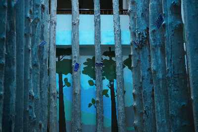
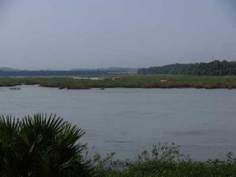
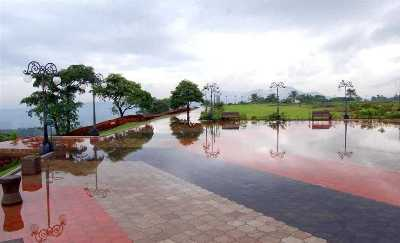

Malappuram is a city in the Indian state of Kerala, spread over an area of 33.61 km².
The first municipality in the district formed in 1969,
Malappuram serves as the administrative headquarters of Malappuram district.
Divided into 40 electoral wards, the city has a population density of 2,083 per square kilometre.
Nilambur Teak Museum

Established in 1994, Nilambur Teak Museum is the first teak museum in the country.
They have a collection of information in the form of articles and comprehensive documents that also mention the historic and artistic value of the wood.
Bharathapuzha

Flowing along a stretch of 209 km, Bharathapuzha River is also called River Nila.
It is the second longest river in Kerala and provides shelter to 11 reservoirs
with Malampuzha dam being the largest.
Kottakunnu

Kottakkunnu is a mesmerising garden situated on a hill.
Its beauty is often compared with the picturesque Marine Drive in Mumbai.
The attraction has a Water Park, an Adventure Park, an Art Gallery, 16D cinema, an Open Air Theatre and a Balloon Park.
These amusements make Kottakkunnu a perfect picnic spot.